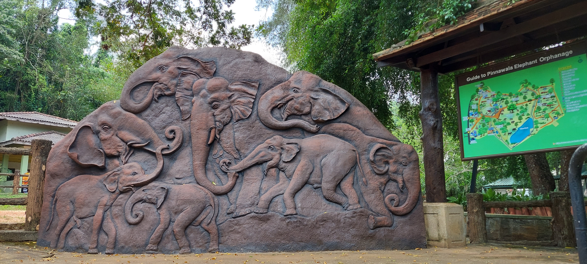
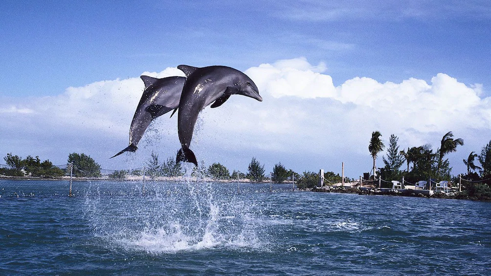
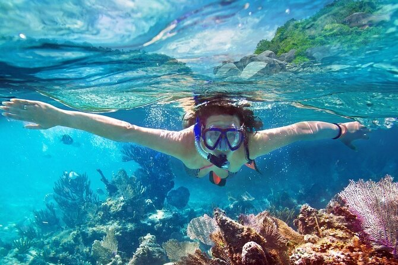

Kite surfing, dolphins, and untouched coastal beauty
Kalpitiya, located on Sri Lanka’s northwestern coast, is a hidden gem known for its pristine beaches, lagoons, coral reefs, and thrilling water sports. Unlike crowded tourist hotspots, Kalpitiya offers a peaceful and eco-friendly coastal experience.
Kalpitiya is internationally recognized as one of Asia’s top kite surfing destinations. With steady winds and shallow lagoons, it is ideal for both beginners and professional riders.
The waters off Kalpitiya are famous for large pods of spinner dolphins. Between November and April, visitors can witness thousands of dolphins performing spectacular spins and jumps.
Bar Reef is the largest coral reef in Sri Lanka and a marine sanctuary rich in biodiversity. Snorkeling and diving reveal vibrant corals, reef fish, sea turtles, and rays.
Built by the Dutch in the 17th century, the Kalpitiya Fort stands as a reminder of Sri Lanka’s colonial past. The fort overlooks the lagoon and adds historical depth to the region.